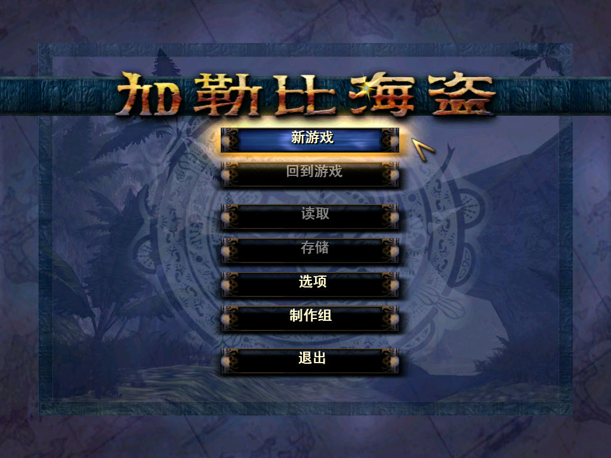
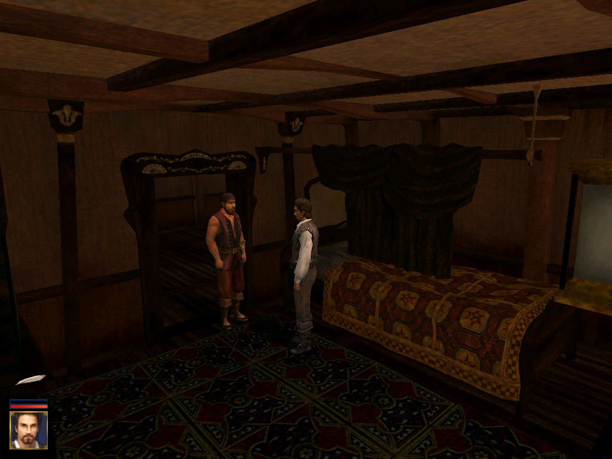
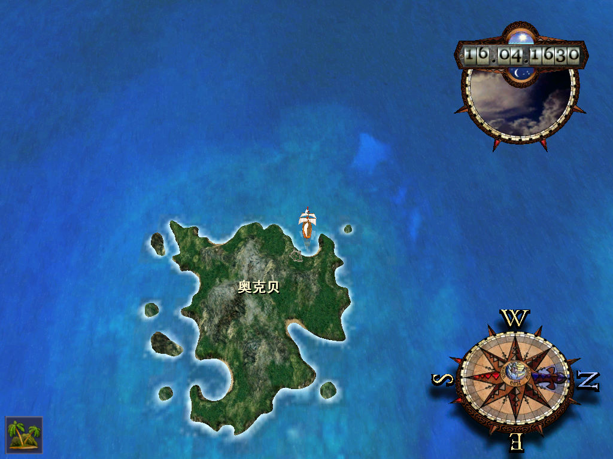

名稱：加勒比海盜／加勒比海海盜 (Pirates of the Caribbean，簡中版)
簡介：Akella 2003年出品的動作冒險遊戲，兼具角色扮演遊戲元素，由Bethesda Softworks
代理發行，2004年由東方娛動簡中化並代理發行 [待補]。



保護：光碟
操作：
滑鼠左鍵 = 前進／放大船隻鏡頭
滑鼠右鍵 = 後退／縮小船隻鏡頭
滑鼠移動 = 左右鍵
Shift = 奔跑
AD = 船隻左右轉
W = 揚帆
S = 收帆
Space = 船隻火炮開火／攻擊／執行行動（交談等）
Ctrl = 使用望遠鏡／格擋
Z = 回避
E = 拔劍／入鞘
Q = 手槍開火
F/E = 小地圖縮放
TAB = 第一人稱／第三人稱切換
Enter = 啟動圖示（熱鍵行動）選單
Esc = 取消
F1 = 系統選單
F2 = 玩家選單
F3 = 執行[熱鍵行動]命令